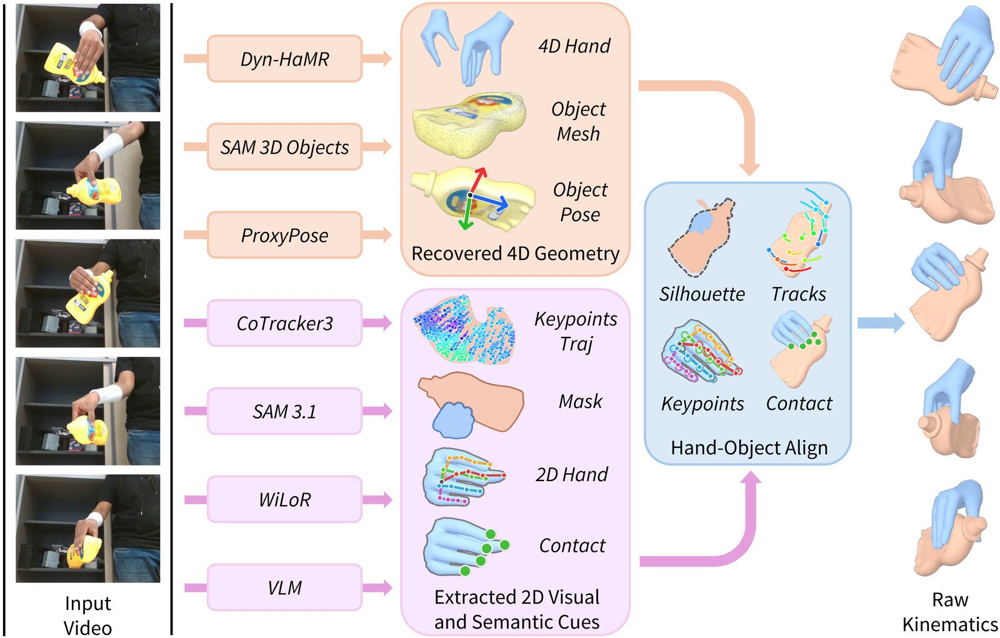

Kinematics Reconstruction

Vision foundation models give the initial geometry. Dyn-HaMR recovers the 4D hand, SAM 3D Objects generates the object mesh, and ProxyPose anchored by FoundationPose estimates its pose.
As the hand and the object come from separate models, an alignment then optimizes the object scale, the hand and a per-frame correction of the object pose against cues from the video: SAM 3.1 object masks, CoTracker3 point tracks, WiLoR 2D hand keypoints, and per-finger contact labels from a VLM.